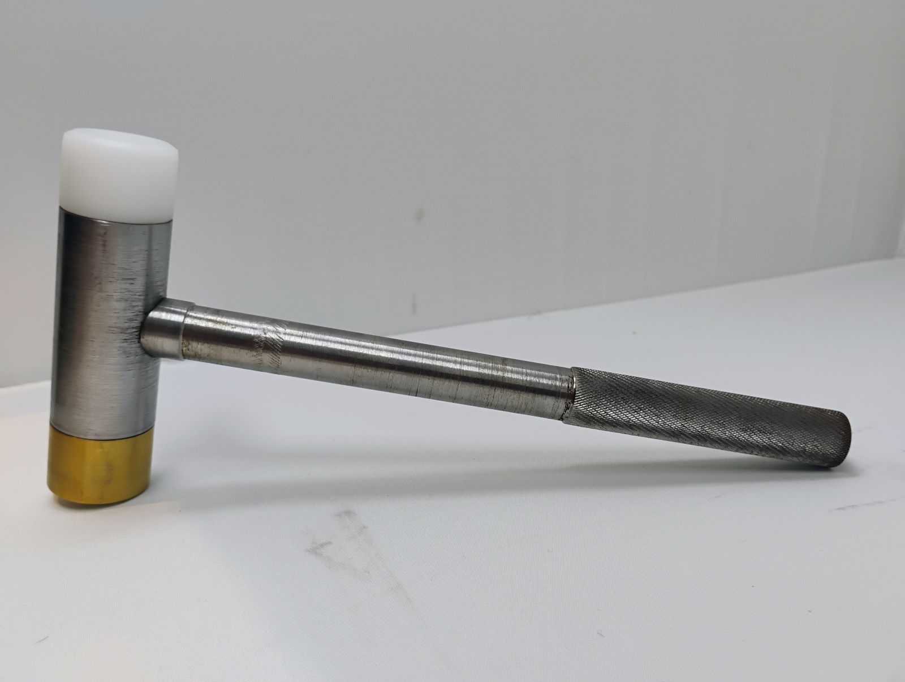
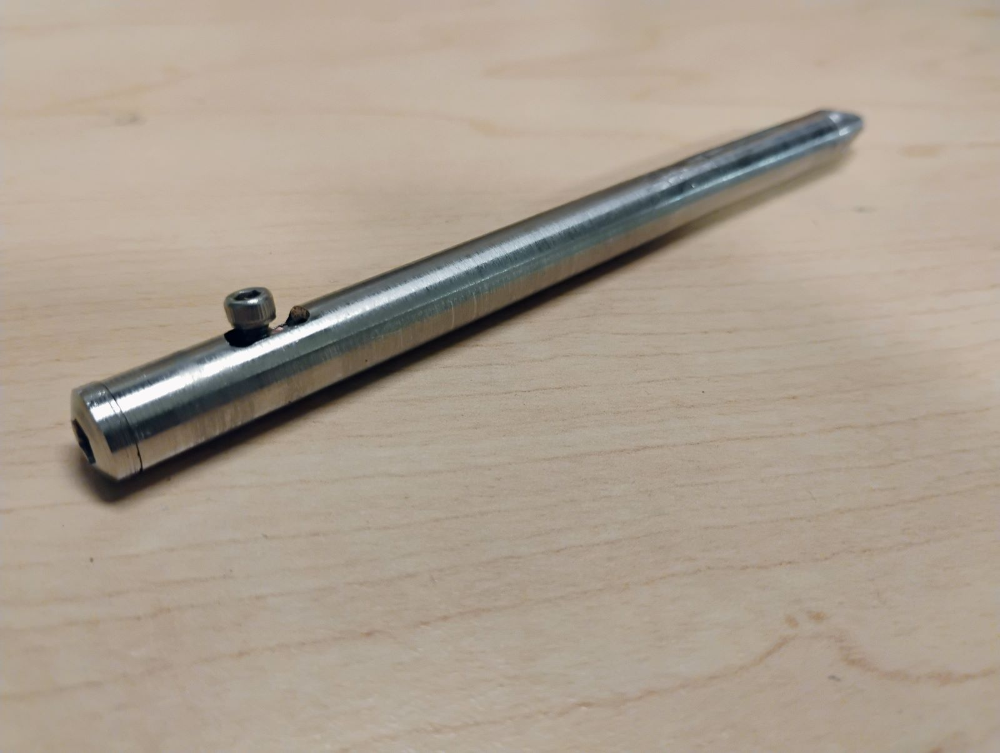

I started machining in high school as part of a trades education program, which gave me a strong appreciation for understanding how materials behave and how to shape them effectively.


Machining has taught me intuition about materials, care for tools, and attention to detail that carries through every project I undertake.